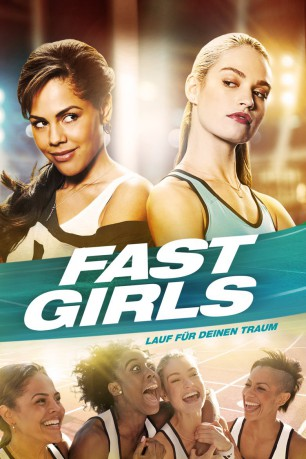

#8050 Fast Girls: Lauf für deinen Traum
 
 IMDB-Wertung: 6.2 / 10
IMDB-Wertung: 6.2 / 10  Metascore: 0
Metascore: 0 
Die jungen Leichtathletik-Talente Shania und Lisa verbindet der unbedingte Wille zum Erfolg und der Traum von einer Teilnahme an den Weltmeisterschaften – doch damit enden die Gemeinsamkeiten auch schon. Als die Zwei es ins 100 Meter Staffelteam schaffen, sind sie ihrem großen Ziel ein Stück näher, jedoch gezwungen zusammenzuarbeiten. Dass beide Mädchen zudem auch noch für den Teamarzt Carl schwärmen, macht die Situation nicht einfacher. Können die Rivalinnen ihre Differenzen rechtzeitig zum alles entscheidenden Rennen überwinden und gemeinsam für den Sieg kämpfen?
Jahr: 2012
Dauer: 90 Minuten
FSK: 0
Land: England Studio: Capelight PicturesTonspuren: DTS - ,
Untertitel: Deutsch,
Auflösung: 1080p (1920x816) Größe: 4843 MB
Genre: Drama, Sport
Regisseur: Regan Hall
Drehbuch: Noel Clarke
Soundtrack: Richard Canavan
Darsteller:
- Lenora Crichlow als Shania Andrews
 Phil Davis als Brian
Phil Davis als Brian- Richie Campbell als Daze
- Tiana Benjamin als Tara Andrews
 Lily James als Lisa Temple
Lily James als Lisa Temple Rupert Graves als David Temple
Rupert Graves als David Temple- Emma Fielding als Ellie Temple
 Noel Clarke als Tommy Southern
Noel Clarke als Tommy Southern- Emma Handy als GB Training Centre Official
- Lashana Lynch als Belle Newman
- Lorraine Burroughs als Trix Warren
 Dominique Tipper als Sarah
Dominique Tipper als Sarah- Bradley James als Carl
- David Shelley als Eldridge
- Daniel Francis als Sean Warren
 Tim Bentinck als TV News Presenter
Tim Bentinck als TV News Presenter Simon Chandler als GB Worlds Official
Simon Chandler als GB Worlds Official- Kim Wall als Relay Team: Sweden
- Donna Louise Bryan als Relay Team: Spain
- Emma Louise Cargill als Athlete: Barcelona
- Samantha Choat als Spectator (uncredited)
- Melissa Hollett als Spectator (uncredited)
- Lucas Antoine Starrets als Coach (uncredited)
 Glenn Webster als Maintenance / Cleaner (uncredited)
Glenn Webster als Maintenance / Cleaner (uncredited)- Dixon Weinor als WC Athlete (uncredited)
- Jamie Howard als Craft
- Jahvel Hall als Evs
- Chani Bentsi-Enchill als Neesha
- Miles Constable als Toddler
- Michelle Joseph als Auntie P
- Louise Ford als Jane
- Chloe Michaud als Danielle Lloyd
- Mark Penfold als GB Qualifiers Official
- Hannah Frankson als Rachel
- Gina Isaac als Lisa's Coach
 Jason Lewis als Darren
Jason Lewis als Darren- Anwar Lynch als Party Guest
- Tyrese Mayne als Nathan Warren
- Paul Dickenson als Worlds Commentator
- Thomas Iwan als Sports TV Presenter
- Iwan Thomas als Sports TV Presenter
- Katharine Merry als Trackside TV Presenter
- Margherita Taylor als Radio DJ
- James Richardson als Stadium Announcer
- Colin Jackson als Athletics TV Commentator
- Jonathan Edwards als Athletics TV Commentator
- Annie Tagoe als Relay Team: America
- Lesley Owusu als Relay Team: America
- Ambwene Simukonda als Relay Team: America
- Tunrayo Nubi als Relay Team: America
Datei: X:\2012(A-F)\Fast Girls Lauf für deinen Traum (2012, FSK0, 1920x816).mkv seit 19.01.2018
Festplatte: HD 2012(A-M)
 Es gibt insgesamt 102 Filme in der Gruppe '2012(A-F)'
Es gibt insgesamt 102 Filme in der Gruppe '2012(A-F)'